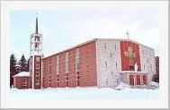
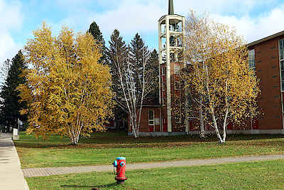

Sise en la ville de Senneterre (Québec, Canada), l’église actuelle a été construite en 1960, selon les plans de l’architecte Jean-Charles Fortin, de St-Lambert (Comté de Chambly, Qc). Inaugurée le 25 décembre 1960, elle a été bénite le 25 juin 1961, par Mgr Albert Sanschagrin, o.m.i., Administrateur Apostolique.
Dernière mise à jour : le 20 octobre 2023
Webmestre :
Christian Bélisle
Assemblée générale (12 novembre)
Conformément à l'article 50 de la loi sur les fabriques, vous êtes par la présente convoqué(e)s à une assemblée des paroissiennes et paroissiens qui aura lieu le 12 novembre 2023 à 15h00 en l'église de Senneterre.

Photo: C. Bélisle (2023)
Photo: C. Bélisle (2023)
© 2023 Christian Bélisle